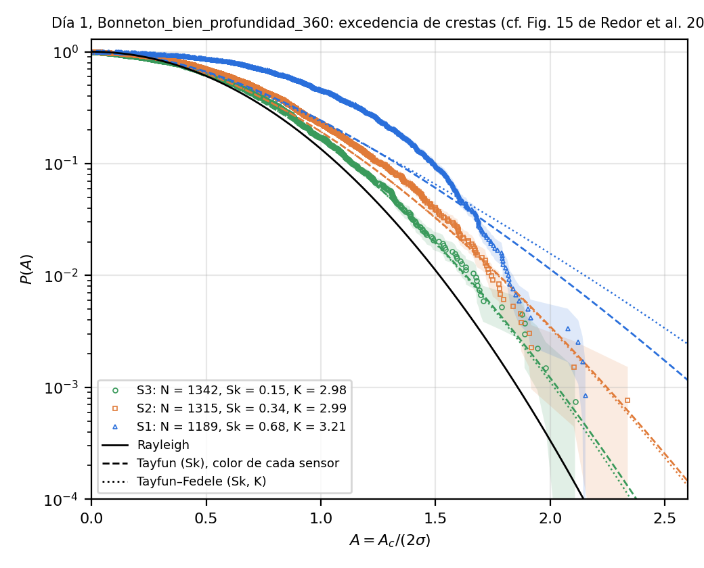
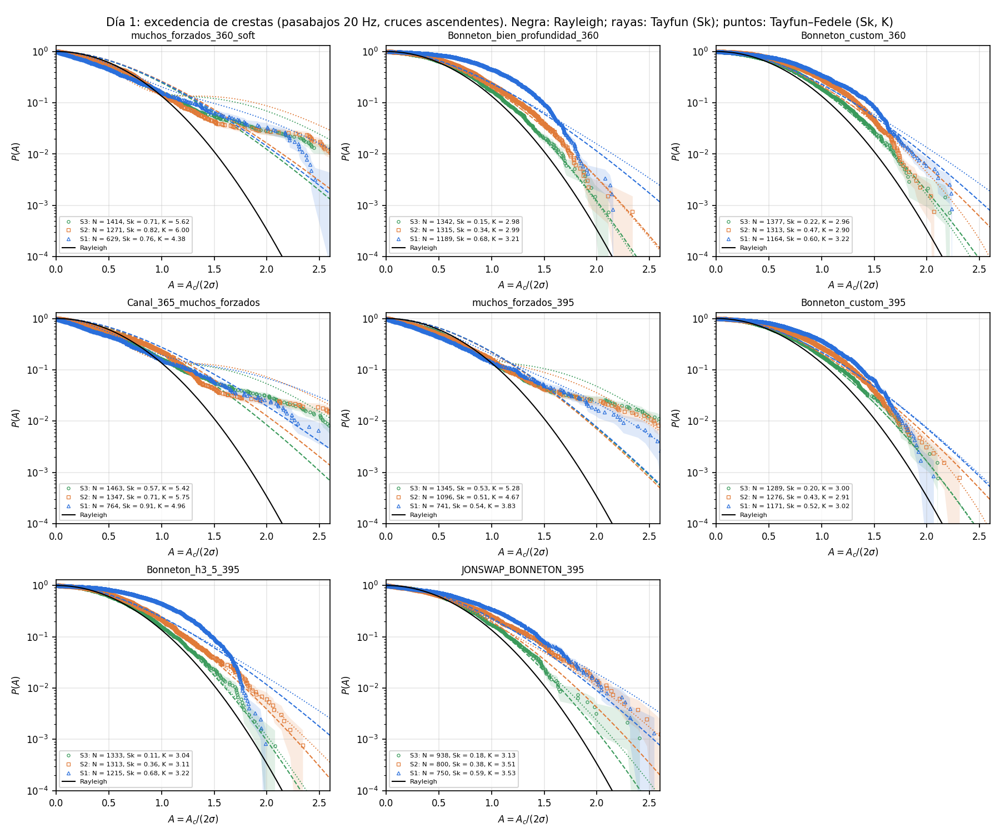
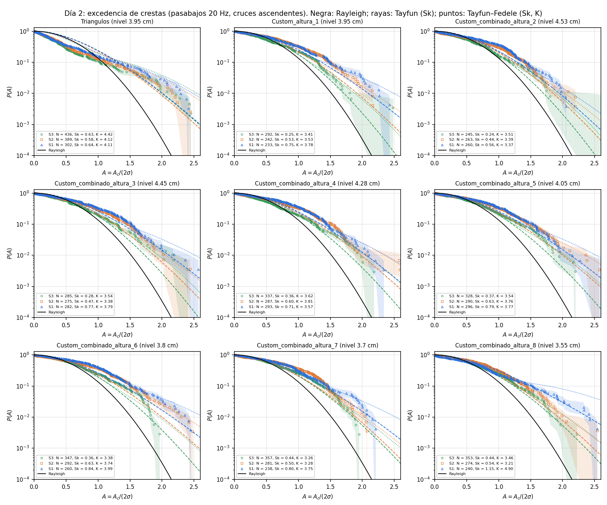
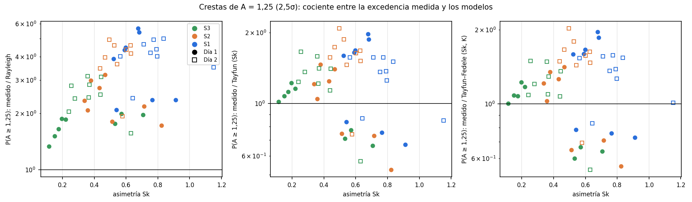

Journal Week 43
Table of Contents
Referencias
2026-10-20
[15:30] Referencia para medir con cámaras laterales: Redor et al. (2021)
Idea: medir la superficie libre en la cuba grande con cámaras laterales a través de la pared de vidrio. Referencia a seguir:
- I. Redor, H. Michallet, N. Mordant y E. Barthélemy, Experimental study of integrable turbulence in shallow water, Phys. Rev. Fluids 6, 124801 (2021). doi:10.1103/PhysRevFluids.6.124801, arXiv:2210.04638.
- Detalle de la técnica: I. Redor et al., Analysis of soliton gas with large-scale video-based wave measurements, Exp. Fluids 61, 216 (2020), y la tesis de Redor (Univ. Grenoble Alpes, 2019).
Montaje del paper (sección de métodos, figs. 1, 3 y 4):
- Canal de 33,73 m × 0,55 m, paredes laterales de vidrio en paneles de 1,92 m separados por postes de 8 cm.
- 7 cámaras Full HD (1920 × 1080) sincronizadas, a 20 fps; cada una filma un panel entero. Píxel ≈ 1 mm; cubren 14 m del canal.
- Imágenes rectificadas con una grilla de calibración apoyada contra el vidrio de adelante.
- Contraste: fondo del canal pintado de blanco y pared de atrás pintada de negro. Con la cámara a un ángulo adecuado, la línea de contacto agua-vidrio queda como borde entre dos imágenes refractadas: la del fondo blanco (refractada por la superficie libre) y la de la pared negra (refractada por el agua junto al vidrio). Con ese borde nítido logran resolución sub-píxel, mejor que 0,1 mm.
- La fig. 4 del paper está en escala de grises invertida (por eso la superficie se ve negra). Abajo, la figura tal como sale en el paper y la versión re-invertida, que debería parecerse a la imagen cruda: fondo oscuro (pared negra), franja clara a la altura de la superficie y franja clara abajo (fondo blanco). Si además le ajustaron el contraste, la re-inversión no lo recupera.


Para nuestra cuba (a probar):
- ¿Fondo negro y pared blanca, al revés que en el paper? En principio también daría un borde nítido, con el contraste invertido; no está verificado.
- Nuestro “fondo” bajo los sensores es la rampa impresa: habría que pintarla o cubrirla.
- Con pocos mm de profundidad sobre la rampa (h ≈ 3,5 mm bajo S1), la imagen del fondo refractada por la superficie va a ser más angosta: a confirmar con una prueba.
- Antes de pintar nada, probar con cartulinas blancas y negras y una sola cámara.
[15:40] Excedencia de crestas (Fig. 15 de Redor et al. 2021) con los Días 1 y 2
- Script
Tercera iteración/Día 4/Códigos/crestas_excedencia.py(carpeta nueva Día 4, mismas reglas que el Día 3). η deserie()depdfs_eta.py(mismos tramos y calibraciones). - Método: pasabajos 20 Hz. Sin filtrar, los cruces por cero cuentan ruido: 7–50 cruces/s contra ~2,4 Hz con 10–20 Hz. Olas por cruce ascendente, cresta = máximo entre cruces, A = Ac/(2σ) como en Redor.
- Modelos de referencia: Rayleigh exp(−2A²), Tayfun de 2.º orden con μ = Sk/3 y Tayfun–Fedele con Λ ≈ 8(K−3)/3. Que la curva roja de Redor (Fedele & Tayfun 2009, ec. 5.19–5.20) sea exactamente Tayfun con μ = Sk/3 lo supongo yo: a confirmar.
- Bonneton (Día 1): todos por encima de Rayleigh, como en Redor. En A = 1,25 (2,5σ), el cociente medido/Tayfun va de S3 a S2 y a S1 así: ≈ 1,0–1,2 → 1,05–1,4 → 1,6–2,0.
- S3 sigue a Tayfun: la asimetría es de 2.º orden, coherente con lo que dieron las PDFs.
- S1 tiene exceso de crestas intermedias (A ≈ 0,5–1,6) y después un corte abrupto en A ≈ 1,7–1,9: Ac,máx ≈ 3,4–4,4 mm con σ ≈ 0,85–1 mm. Redor ve lo contrario (una cola larga, por los solitones).
- Interpretación (mía, a confirmar): rotura limitada por la profundidad. Las olas grandes ya rompieron antes de S1 y quedan saturadas. Ac,máx sería del orden de la mitad de h en S1, con h ≈ 5–9 mm según el nivel (estimado a partir de la rampa, sin medir).
- Muchos forzados, Canal365 y Triangulos (K = 4–6): por debajo de Rayleigh para A < 1 y con colas largas después. Son dos poblaciones, por la modulación del forzado: no es un mar aleatorio y ningún modelo de banda angosta aplica.
- Barrido del Día 2: entre 2 y 5 veces más que Rayleigh y entre 1,1 y 2 veces más que Tayfun en A = 1,25, sin un corte tan marcado en S1. La excepción es altura 8 (Sk = 1,15): ahí Tayfun–Fedele ajusta (cociente ≈ 1,0). Hay solo 230–360 crestas por serie, así que la cola es ruidosa.



